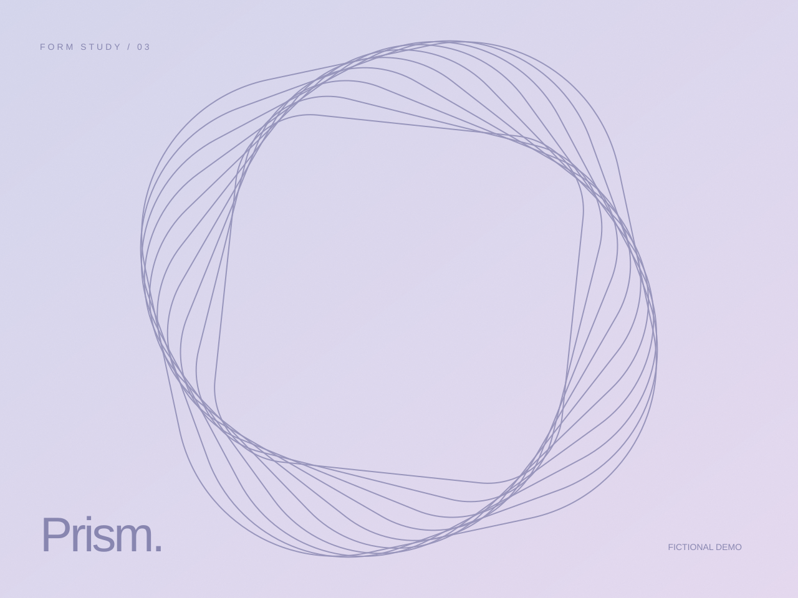

留白也在工作
Space Is Doing Something

留白不是内容之外的部分。它给信息留出距离，也把阅读的节奏交还给人。设计一个页面时，试着先决定哪里应该停顿，再决定哪里需要强调。
Space is part of the content. It gives information distance and returns the rhythm of reading to the reader. Decide where a page should pause before deciding what it should emphasize.
虚构示例文章，所有内容均可替换。Fictional demo article, ready for your own writing.